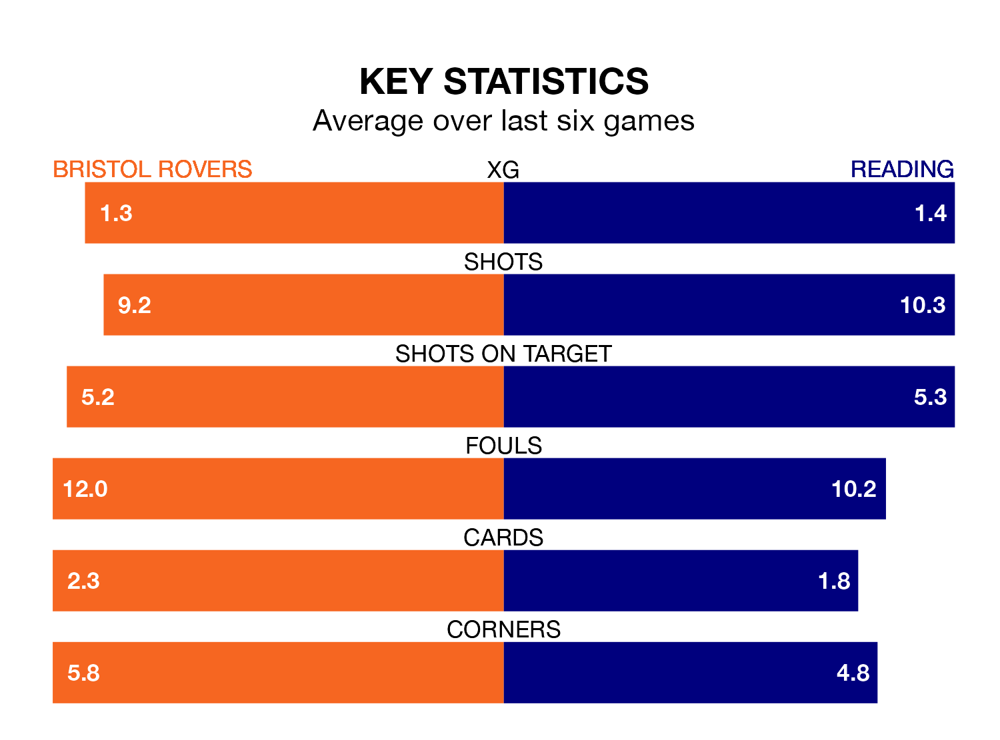

Bristol Rovers are on a terrible run ahead of hosting Reading at the Memorial Stadium on Tuesday, with just two points collected from their last six games.
The Gas have picked up two draws and four losses in their last six EFL League One games, and face a Royals side whose last six games have brought two wins and one draw.
With 59 goals in 42 games so far this season, Reading are scoring more than average in the league with 1.4 goals per game. But they are conceding more than average too, letting in 63 goals at a rate of 1.5 per game.
Rovers, meanwhile, are below average scorers, with 1.2 goals per game, compared to a league average of 1.3. They have conceded 1.5 goals per game.
In Chris Martin, the Gas have one of the league's sharpest shooters so far this season. He has notched 15 goals in 31 appearances, to sit fifth in the scoring charts.
His goal rate of one every 155 minutes is quicker than that of Sam Smith, the Royals's top scorer with a goal every 228 minutes, and a total of 11 goals in 30 games.
The home side are 16th in the table after 41 games, of which they have won 14 and drawn nine, earning 51 points.
The visitors are two places ahead of Rovers in 14th, with 14 wins and 10 draws putting them on 52 points.
Rovers' last match was on Saturday, a 2-0 loss against Bolton Wanderers.
Reading drew 1-1 with Lincoln City last time out, also on Saturday, with Tyler Bindon on the scoresheet.
Tuesday's match will be refereed by Will Finnie, who has taken charge of 17 EFL League One games so far this season, issuing one red card and booking 56 players. He has awarded three penalties.
The last Rovers game Finnie refereed was a 1-0 away win against Exeter City on February 3. His last Reading match was their 2-1 loss away at Exeter City on August 26.
Updated: 11:20 (UTC), 09/04/24